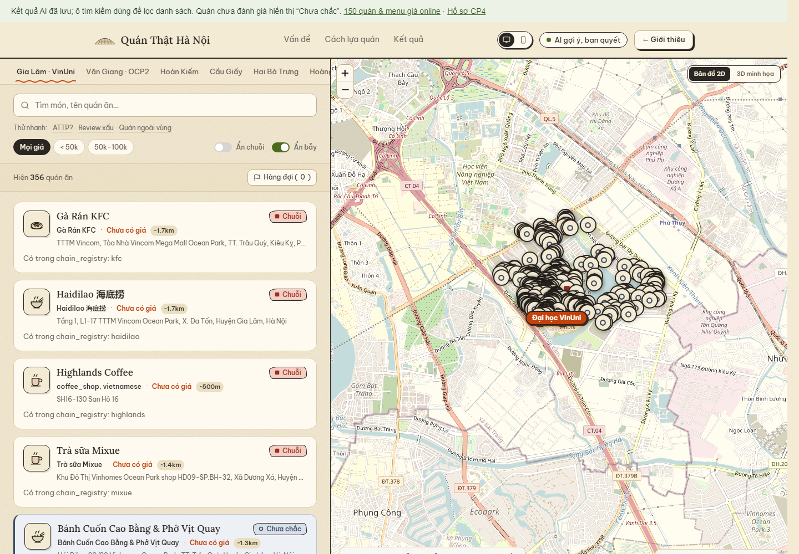

Chuỗi, quán chăng khách hoặc tốn thời gian đọc review.
Dưới ngưỡng 60%; 19 mẫu hợp lệ chưa đủ 20. Phỏng vấn: 0/3.
“Giá có sẵn, ảnh đúng món thật”
Khảo sát ẩn danh P18 · evidence/summary.md
15/19 muốn cách chọn khác; 11/19 gặp “đồ ăn không ngon”, ngoài khả năng phân loại hiện tại.
Chưa xác nhận vai, khu vực hoặc số phút mất mỗi lần.
364 ở Gia Lâm, 58 ở Văn Giang. Chưa phủ đủ các quận trong spec.
150 quán ShopeeFood · 4.308 dòng món
Chọn phân loại quán kèm lý do vì có thể tra lại bằng công cụ.
Gợi ý theo khẩu vị cần dữ liệu cá nhân. Tóm tắt review chưa trực tiếp giải việc nhận diện chuỗi.
Impact tiết kiệm thời gian chưa được đo; 5–10 phút trong spec là tự ước tính.
412 địa điểm lên UI sau khi tách 10 điểm hỗ trợ tài xế.
17 địa điểm có kết quả AI đã lưu. Các địa điểm còn lại không được gán nhãn giả; UI tìm kiếm không gọi model trực tiếp.

Bản đồ thật + menu online, giao diện gốc giữ nguyên.
Nguồn chính thức được thêm vào registry phụ; lý do và URL có trong output.
0 review; có menu và giá online để tự đối chiếu. Không kết luận local khi thiếu căn cứ.
Dự phòng: demo-backup.webm
Thử lạ: python -m cp4.run
Baseline run-1 · 12/20 · 60%
Đổi model run-2 · 12/20 · 60%
CP4 run-3 · 15/20 · 75% (nháp)
Sửa B08, B12, B20; không sửa benchmark hay expected.
Nhãn câu thường: 5/9 = 55,6% < 75%.
Unsure đúng + có flag: 5/5 = 100% ≥ 90%.
Từ chối/chèn lệnh: 4/4 = 100%.
Grounded reason: 15/15 câu có nhãn khớp bằng chứng trace (nháp).
5 câu local vẫn trượt. Cần người thứ hai duyệt; B16 chưa gợi ý được quán.
50 phiên · 87 lượt hỏi · 0 lỗi · token từ API usage
| Kịch bản giá | USD / phiên | USD / task đạt* | USD / tháng · 300 người* |
|---|---|---|---|
| gpt-6-luna · đã chạy | 0,00015 | 0,00020 | 0,7579 |
| gpt-6.1-sol · chỉ áp giá | 0,0030 | 0,0040 | 15,16 |
100 / 300 / 1.000 người: Luna $0,2526 / $0,7579 / $2,53 mỗi tháng.
*Người dùng, số phiên/tháng là tự ước tính. Task đạt dùng tỷ lệ nháp 75%, chưa phải hiệu quả ngoài đời. Model thứ hai áp giá trên token Luna, chưa đo chất lượng.
Tổng batch CP4: $0.008997 · trần được duyệt $1. Chưa tính thuế, hosting, crawl/review và thời gian người kiểm.
20 câu qua API, 0 lỗi.
50 phiên mô phỏng, 0 lỗi.
Menu đầy đủ ở 138/150 quán.
Lý do và nguồn hiển thị; dữ liệu thiếu không bị thay bằng mẫu minh họa.
58% pain < 60%, mẫu 19 < 20.
5/9 nhãn thường < 75%.
Review thật: 0.
Người chấm thứ hai: chưa có.
Chi phí thấp không thay thế bằng chứng người dùng và độ đúng.
Đủ ≥20 người đúng đối tượng, ≥3 phỏng vấn thật; đo thời gian chọn quán trước/sau.
Thu ≥3 review cho 150 quán; kiểm tra nguồn, không lưu tên tác giả. Ghép 140 menu còn thiếu tọa độ.
Người thứ hai chấm ≥5 output; ưu tiên 5 lỗi local và B16. Chạy máy khác, phân công thuyết trình.
Giữ nguyên chuẩn đạt và các lượt đã chạy.
Bộ nộp bổ sung: cp4/README.md · status.html · demo-slides.pdf · demo-backup.webm